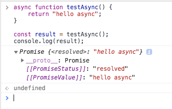

JavaScript-的-async-await
第一阶段, 知道 await 当异步为同步,
第二阶段, 知道了 event loop 后知道 await 是 promsie 的语法糖.
第三阶段, 竟然再执行 await 下面的语句之前, 会执行 async 外的同步语句, 这个 怎么和Promose的 then结合理解呢?. 可不可以理解为 await 下面的语句, 是类似 Promise的 .then 的语句哦
第四阶段, 竟然导致微队列先执行了
结论放开头
async function只是用来返回一个Promise对象或者要执行await时包上为了达到async function不阻塞的效果.(并是不说async里面一定要有await),绝不会阻塞后面的语句,整个一个async function不会阻塞哦, 且返回的是Promise.(不要和里面的await遇到Promise阻塞搞混),而且await不会包装值为Promise- —- 区别
async会返回一个Promise, 不阻塞,await就算接收了Promise也只返回里面的值, 阻塞.
- —- 区别
await是用来在async functnion中等待执行一个表达式(expression),而且只能在async function中使用, 可以等的是普通的函数(那就当啥事没有,正常往下同步执行呗), 当然重点是说等着Promsie, 保证来的如果是Promise对象, 那么一定会保证先等这个promise搞定了(阻塞),再往下执行代码.(await必须用在async函数中的原因就是为了async function不阻塞),注意:await不会包装值为Promise和then不一样async/await的优势在于优化处理then链以及对比Promise更清晰的传递参数- 优化点, 处理
await的时候最好用try...catch住,或者用.catch防止Promise变为reject - 处理多个的时候用
Promise.all(),并且传入数组[], 切记不要用forEach,虽然forEach可能让他们并发执行 - 至于
await用不用, 看这一步的await会不会对后面的产生影响. 并不是说子的函数就搞定了. 他还是promise,pending的
建议再看下多进程浏览器, 多线程渲染进程这个 event loop 从输入URL到页面加载发生了什么
看了 event loop 后知道宏任务和微任务, 再然后是 await 和 promise 的关系
实际上，async/await 在底层转换成了 promise 和 then 回调函数。也就是说，这是 promise 的语法糖。每次我们使用 await, 解释器都创建一个 promise 对象，然后把剩下的
async函数中的操作放到then回调函数中(这不就是先new promise中的’同步’ 这个同步指伪的,, 然后then中的微队列么)。 这个我觉得就是重点, 理解语法糖结构
从 event loop 到 async await 来了解事件循环机制 6666669
重点以前的误解(注意右边, 下面, 外面的措辞)
在async函数中遇到await关键字，await右边的语句会被立即执行然后await下面的代码进入等待状态，等待await得到结果。接着执行async函数外的同步代码, 然后再回到await右边的语句(如果有then(是个 promise)就执行完当前宏任务后的微队列), 最后才往await下面执行.
await后面如果不是promise对象,await会阻塞下面的代码，先执行await右边表达式中的同步代码. 再执行当前async函数外面的同步代码，同步代码执行完，再回到async内部，把这个非promise的东西，作为await表达式的结果, 然后执行await下面的代码, (后面存在微队列的话, 再去执行微队列的, 但微队列不会提前到await下面的语句执行前执行)。 微队列一般指then这个语句await后面如果是promise对象，await也会暂停async函数中后面的代码(await下面的语句)，但要先执行当前async函数外面的同步代码，(这里注意哦, 如果await后的表达式有同步的代码, 先执行这个, 有加入微队列的加入微队列, 再执行外面的同步代码. 外面的同步代码可能会有推入微队列的操作), ( 然后再执行await后面, 微队列 会提前执行, 记得会把async外面加入微队列 的代码一起执行了, 再执行await下面的代码 )- 这里重点记忆下: 然后等着
await右边的Promise对象fulfilled，再把resolve的参数作为await右边表达式的运算结果。(如果async函数外面的同步代码存在then这种微队列中的, 那么微队列会提前执行了.), 最后再执行await下面的代码 - 先执行
await右边表达式同步代码, 然后执行async外面同步代码, 然后执行then微队列, 最后返回data, 最后在执行await下面的语句 - 这样就导致微队列中的代码提前执行了
- 这里重点记忆下: 然后等着
- 就是注意 执行
await后面的表达式后, 不会立即执行await下面的, 而是先执行async外面的同步代码- 一般上面没啥问题, 就是注意如果执行
await后面的表达式后面是一个promise, 那么这个会把微队列也先执行掉
如果await后面是是Promise的, 那么会提前执行微队列, 注意再提前也是要先执行完async外的同步代码哦
从输入URL到页面加载发生了什么, 从输入URL到页面加载发生了什么从输入URL到页面加载发生了什么 重要的链接看三遍哦
在说下结论: 不需要把上面的
await特别理解, 只需要动event loop然后知道 微队列 常见的是promise的then. 而await说的分右边的表达式是不是promise的, 在去async外执行 这个. 直接把await的当promise的, 下面的语句当做then的内容, 所以才会顺序执行.
直接把await这条语句当promise, 下面的语句当做then的内容, 所以才会顺序执行. 所以才会要执行async的同步语句先.
直接把await这条语句当promise, 下面的语句当做then的内容, 所以才会顺序执行. 所以才会要执行async的同步语句先.
直接把await这条语句当promise, 下面的语句当做then的内容, 所以才会顺序执行. 所以才会要执行async的同步语句先.
想想怎么把 await 转成 promise 在思考这个顺序, 反正 await 并不是 .then 因为两者返回值类型不同, .then会包着 Promise 的
反正
await返回一个值, 但右侧不必要一定是promise类型的,async的函数 可以接then
还要注意
1 | setTimeout(function () { |
- 6 是宏任务在下一轮事件循环执行
- 先同步输出 1，然后调用了 async1()，输出 2。
- await async2() 会先运行 async2()，5 进入等待状态。
- 输出 3，这个时候先执行 async 函数外的同步代码输出 4。
- 最后 await 拿到等待的结果继续往下执行输出 5。
- 进入第二轮事件循环输出 6。
上面没啥问题, 下面的第一个例子也没啥问题, await右边不是 promise, 重点看第二个例子await右边是 promise, 然后async函数外的同步代码又会推入微队列
再一次理解: 果然可以理解为
await后面的语句当做then的, 所以可以顺序执行
1 | async function async1() { |
这里再补充 resolve 中的
1 | async function async1() { |
如果把 await 换了, 这里没有把原来 await 后面的语句用 then 包上, 所有顺序有错误
1 | async function async1() { |
扩展, ajax, node 的时间循环, promise, async/await
说下 async 起的作用
这个问题关键在于, async函数如何处理它的返回值. 在普通的function前加async的效果是啥
我们可以直接通过return来返回我们想要的值(没有返回值就是返回undefined), 这里就可以知道,async里面有没有await并没有多大关系
代码如下
1 | async function testAsync() { |

看到输出结果就知道了, 输出的就是一个Promise对象.还是resolve状态的.
所以, async函数返回的是一个Promise对象, 在MDN 文档 async function中可以知道. 就像上面如果是一个直接量'hello async' 那就把这个通过Promsie.resolve()封装成Promise对象.
所以在外层如果不用await获取其返回器的情况下, 当然我们就用Promise的.then链式来处理咯.
1 | testAsync().then((v) => { |
当然async没有返回值就是返回Promise.resolve(undefined)咯.
联想一下 Promise 的特点——无等待，所以在没有 await 的情况下执行 async 函数，它会立即执行(和await阻塞后面的语句不一样啦)，返回一个 Promise 对象，并且，绝不会阻塞后面的语句, 绝不会阻塞后面的语句, 绝不会阻塞后面的语句。这和普通返回 Promise 对象的函数并无二致。
无等待就是直接返回一个
promise啊
那么async有啥用呢, await又在等个啥
await等啥呢,当然重要的是等Promise, 其他的也可以等
按我们以前片面的理解,await等待的是一个async函数的完成. 从前面到这里我们知道,那么等待的是一个Promise对象咯, 但从MDN await中可以知道, await等待的是一个expression. 所以这个表达式可以是Promise对象,当然也可以是其他值咯
如下的例子,await后面可以是直接量,也可以是Promise对象
1 | function getSomething() { |
当await等到了后expression的值, 然后
await表达式的运算结果取决于它等的东西, 按前面分有 2 种情况: 重点当然是等来了Promise了
- 如果等来的不是
Promise对象, 那await表达式的运算结果就是那个等来的值 - 如果它等得到了
Promise对象, 那么await就会阻塞后面的代码, 等Promise对象状态变好resolve或reject,得到了这个值,作为运算结果咯. 这结果不是一个Promise的
这就是
await必须在async function中使用的原因. 前面说async function调用不会造成阻塞, 它内部的所有阻塞都封装在一个Promise对象中异步执行了. 谁保证执行呢, 就是这个await
async/await帮我们干了啥, 优势在哪
上面已经说明了 async function 会将里面的的函数（函数表达式或 Lambda）的返回值封装成一个 Promise 对象，而 await 会等待这个 Promise 完成，并将其 resolve 的结果返回出来。
现在举例，用 setTimeout 模拟耗时的异步操作，先来看看不用 async/await 会怎么写
1 | function takeLongTime() { |
如果改用 async/await 呢，会是这样
1 | function takeLongTime() { |
眼尖的已经发现 takeLongTime() 没有申明为 async。实际上，takeLongTime() 本身就是返回的 Promise 对象，加不加 async 结果都一样，如果没明白，请回过头再去看看上面的“async 起什么作用”。
又一个疑问产生了，这两段代码，两种方式对异步调用的处理（实际就是对 Promise 对象的处理）差别并不明显，甚至使用 async/await 还需要多写一些代码，那它的优势到底在哪？
async/await 的优势在于处理 then 链以及对比Promise更清晰的传递参数
单一的 Promise 链并不能发现 async/await 的优势，但是，如果需要处理由多个 Promise 组成的 then 链的时候，优势就能体现出来了（很有意思，Promise 通过 then 链来解决多层回调的问题，现在又用 async/await 来进一步优化它）。
假设一个业务，分多个步骤完成，每个步骤都是异步的，而且依赖于上一个步骤的结果。我们仍然用 setTimeout 来模拟异步操作：
1 | /** |
现在用 Promise 方式来实现这三个步骤的处理
1 | function doIt() { |
如果用 async/await 来实现呢，会是这样
1 | async function doIt() { |
结果和之前的 Promise 实现是一样的，但是这个代码看起来是不是清晰得多，几乎跟同步代码一样
Promise 方案的死穴—— 参数传递太麻烦了
现在把业务要求改一下，仍然是三个步骤，但每一个步骤都需要之前每个步骤的结果。
1 | function step1(n) { |
这回先用 async/await 来写：
1 | async function doIt() { |
除了觉得执行时间变长了之外，似乎和之前的示例没啥区别啊！别急，认真想想如果把它写成 Promise 方式实现会是什么样子？
1 | function doIt() { |
有没有感觉有点复杂的样子？那一堆参数处理，就是 Promise 方案的死穴—— 参数传递太麻烦了，看着就晕！
其他情况, 代码优化点
Promise如果返回的是reject呢, 或者并行处理呢
也先说结论了
- 在使用
await的时候, 最好用try.catch或者说,用.catch兜底, 2 选 1 - 处理多个的时候用
Promise.all(),并且传入数组[], 切记不要用forEach,虽然forEach可能让他们并发执行
1 | // 写法一 |
javascript 异步操作
从最早的回调函数，到 Promise 对象，再到 Generator 函数，每次都有所改进，但又让人觉得不彻底。它们都有额外的复杂性，都需要理解抽象的底层运行机制。
异步 I/O 不就是读取一个文件吗，干嘛要搞得这么复杂？异步编程的最高境界，就是根本不用关心它是不是异步。
有个没见过的Generator 函数, 这是个啥, 看一看
有一个 Generator 函数，依次读取两个文件。
1 | var fs = require('fs'); |
写成 async/await 函数，就是下面这样。
1 | var asyncReadFile = async function() { |
一比较就会发现，async 函数就是将 Generator 函数的星号*替换成 async，将 yield 替换成 await，仅此而已。
同 Generator 函数一样，async 函数返回一个 Promise 对象，可以使用 then 方法添加回调函数。当函数执行的时候，一旦遇到 await 就会先返回，等到触发的异步操作完成，再接着执行函数体内后面的语句。(注意这里没说很详细, 但看了前面我们就知道, 他隐含说async中返回一个Promise, 而且里面可以没有await)
下面是一个例子。
1 | async function getStockPriceByName(name) { |
上面代码是一个获取股票报价的函数，函数前面的async关键字，表明该函数内部有异步操作(这里其实说的不对,而是因为里面有await所以才用async)。调用该函数时，会立即返回一个Promise对象。
注意点
await 命令后面的 Promise 对象，运行结果可能是 rejected，所以最好把 await 命令放在 try...catch 代码块中。
1 | async function myFunction() { |
参考文档
1. 理解 JavaScript 的 async/await 666
2. 阮一峰的 async只是看怎么用
2. 阮一峰 async 函数的含义和用法
从 event loop 到 async await 来了解事件循环机制 666
Event Loop 原来是这么回事 66
[翻译] Async/Await 使你的代码更简洁